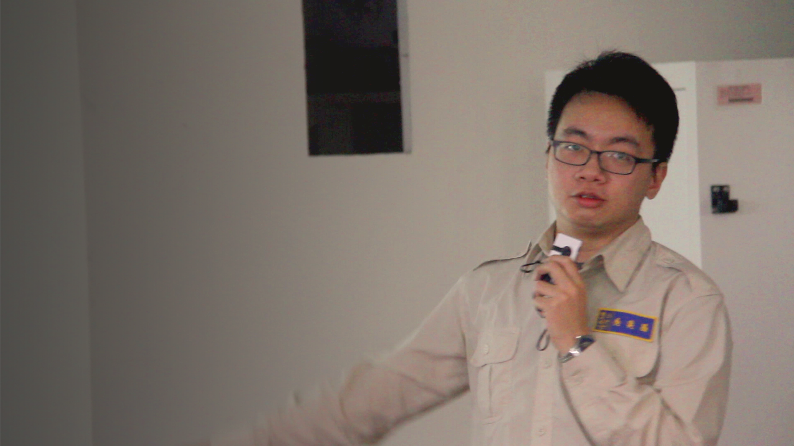
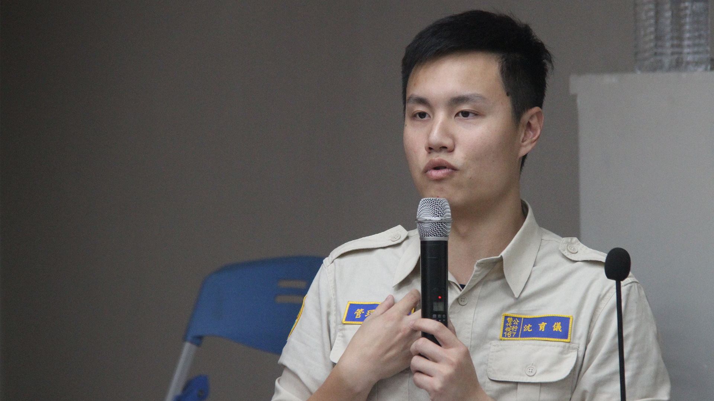
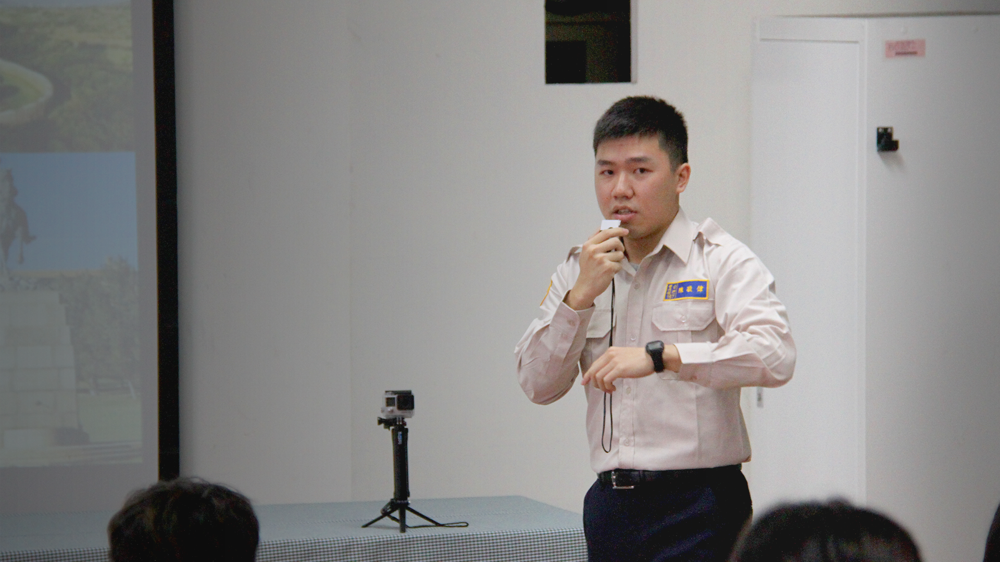
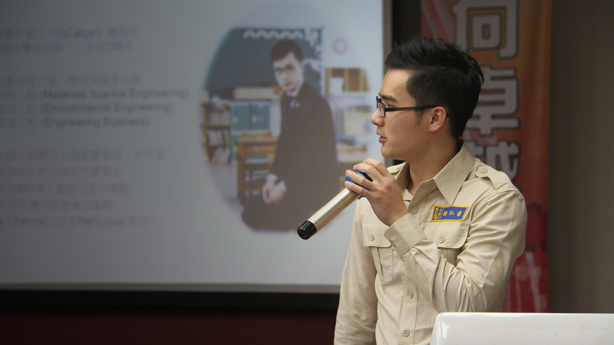
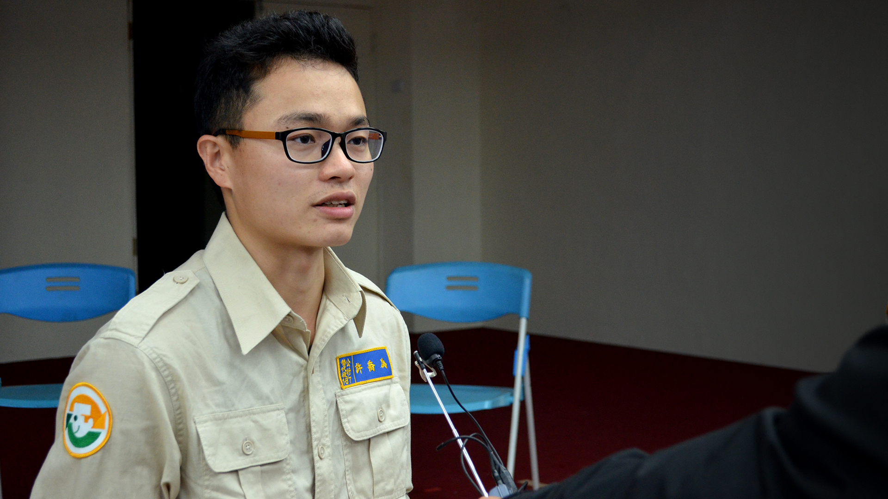
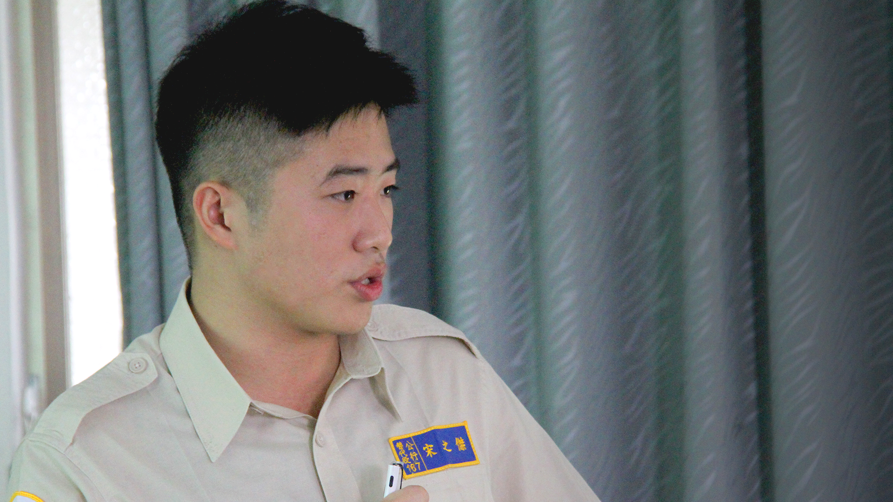
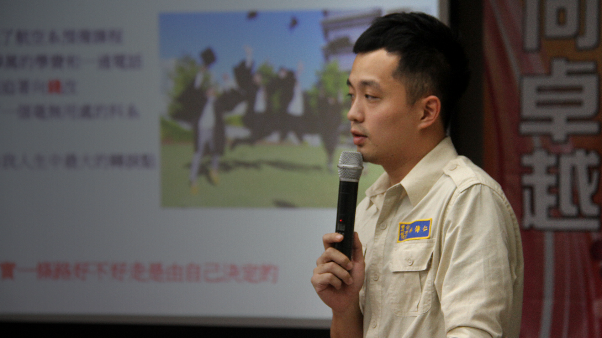
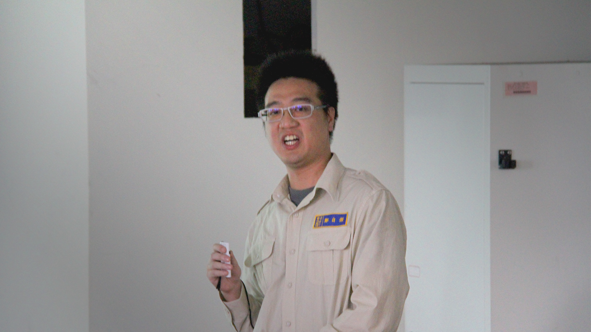

外語役講者們
陸續增加中
Alex 吳奕昌
師大翻譯所準碩士
會在你未來的某一天串連起來
You have to trust that the dots
will somehow connect in your future
土生土長的本地生，英文卻被外語役同梯們讚譽有佳，曾經就讀三類組的他在選擇大學校系時毅然決然跳考一類組，追尋對外語的熱情。如今已錄取師大翻譯所的他，服役期間於臺南市政府第二官方語言辦公室服務，為臺南市的第二官方語言大計貢獻所長，同時也是正在緊鑼密鼓籌備我們的下一場公益活動呢！
「其實從來沒有想過在學校學的口筆譯技巧和英語師培課程，會在服役這年派上這麼大的用場，我想也許人生真的沒有白走的路，只要我們肯相信那些過去的點點滴滴，都會在未來的某一天，以最美的方式和我們再度相遇。」
Tom 沈育儀
美國約翰霍普金斯化學博士
Cleverness is a gift, kindness is a choice
高中留學美國，輾轉流浪了幾個州，最後取得約翰霍普金斯化學工程博士學位，主要研究主題為血管幹細胞與生物材料相互反應，利用其特性研發智能創傷敷料，能加速傷口復原所需時間併減少傷疤產生，他希望日後能在相關產業開發出實用醫療產品造福病患。曾任台灣學生會會長、大華府八校學生會副會長的育儀，在夜市之夜等系列活動中，總會看到他努力發揚台灣文化的身影。
Awei 陳敬偉
南非瓦內科技大學行銷學士
我們開拓出屬於自己的道路。
We don't take the path that most have followed,
we blaze our own trail
國小畢業後，獨自到南非留學，畢業於茨瓦內科技大學行銷學系。求學期間承受不同文化的衝擊與對待，感受過酸甜苦辣，但對他來說這都是資糧，如果有再一次選擇的機會，他還是會選擇往國外走。
穿上替代役制服的我，想為這片土地貢獻出自己的一點心力，希望藉由分享自己所經歷之不同文化的洗禮，能帶給台灣的學弟妹們不同的視野。
「每個人都是獨立的個體，找尋自己的長處跟優點，活出自我才是最重要的！」
Neil 謝仁豪
加拿大YouTuber兼創業家
但是合作可以創造完美的團隊
16歲留學加拿大，以優異的成績於世界一流工程學院畢業。曾是學校太陽能賽車隊一員，比賽成果榮獲全世界第八名。雖然是一名專業工程師，但卻拋開刻板印象身懷許多專長。多才多藝的他曾經擔任戲劇社後台總監、雜誌編輯、還因廚藝了得自己成立一個YouTube頻道「Neilicious」。未來立志要創業解決糧食浪費的問題，讓地球暖化的速度慢下來。
Chiao 許喬為
台大歐盟光電雙碩士兼創業家
Wish to be a stronger man
如果要用一字來形容喬為，就是「狂」啊！
26歲的他一路上從成大光電系、台大光電所到留學英國、比利時的歐盟光電碩士，展現他在專業上的能力。在畢業後「狂」上加狂，於比利時與四五位歐洲人展開第一次創業、回國後在台灣與一些夥伴開啟第二次創業之旅。期間獲得大大小小創業競賽獎項、創業機構金錢或其他輔導。也籌劃了這次在台東的分享會活動。夢想目標是希望能成為有巨大影響力的人，有能力去改變世界上的無奈。
Jack 宋之傑
美國史都華經紀公司演員
Confidence is in yourself
18歲赴美留學，畢業於哥倫比亞學院芝加哥戲劇系學士，參與舞台、電視、廣告表演，於史都華演員經紀公司（Stewart Talent Agency）名下，短短的留學生涯，豐富的經歷美國在地文化，體會每個人在世界上的價值，面對事情充滿自信心。
「沒有人的過去是完美的，但是你的過去造就現在的你，從現在起，認真過生活，為了自己而活。」Jack想跟所有築夢的人說。未來他將成為戲劇老師，繼續在他最喜歡的舞台認真生活！
Ben 林傳仁
澳洲格里菲斯大學國企學士
態度決定你的高度
A glass is half empty or half full
Your attitude dictates your altitude
11歲獨自赴澳留學，畢業於格里菲斯大學國際企業系學士。在國外的四千多個日子裡，為了生活當過洗碗工、廚師、咖啡師，也曾經在免稅店當過店員，最後如願進入世界前20大銀行NAB任職。一個人在異鄉長大遇到的種種難題，讓他變成獨立自主的大男孩，遇上問題總能積極以對。這一年，他回到台灣，披上一襲卡其制服加入替代役行列，想著能為家鄉做點什麼。
下一步呢？
「我想成為一名機師，載著旅人往返世界各地，守護他們的安全。」他微笑答道。
Kevin 鄭自傑
澳洲新南威爾斯大學機械學士
就會搞得大家都不是人
When you assume,
you make an ass out of you and me
10歲與家人移民紐西蘭，畢業於澳洲新南威爾斯大學機械工程系學士。面對過許多不同環境，包括了人、語言與文化。當接觸新東西時，抱者好奇心去了解再慢慢調整自己。雖為理工背景的他，努力去追求理工外的知識，只為了減少預設立場。
未來？「不知道。大家都在瞎子摸象我也包括在內，想辦法去當一個摸的最完整的那個人。」